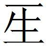
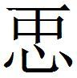
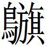
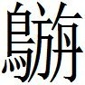

宋衛
鮑本 宋：沛、梁、楚、山陽、濟陰、東平及東郡之須昌、壽張。補曰：漢志 ，壽張下有「今之睢陽」四字。
鮑本 衛：東郡及魏郡黎陽，河北之野王、朝歌。後文公徙楚丘，黎陽是也。
齊攻宋宋使臧子索救於荊
齊攻宋，宋使臧子索救於荊。荊王〔一〕 大說，許救甚勸〔二〕 。臧子憂而反。其御曰：「索救而得，有憂色何也？」臧子曰：「宋小而齊大。夫救於小宋而惡於大齊，此王之所憂也；而荊王說甚，必以堅我。我堅而齊弊，荊之利也。」臧子乃歸。齊王〔三〕 果〔四〕 攻，拔宋五城，而荊王不至。〔五〕
〔一〕 鮑本 威。
〔二〕 姚本 勸，力也。
〔三〕 鮑本 宣。
〔四〕 鮑本 「果」下無「攻」字。
〔五〕 鮑本 此四章有蘇秦語，得為君偃？而君偃弒立怒鄰，宜不能曲折如此，故係之剔成。然則孟子 所稱，審亦皆剔成也。正曰：此章時不可考，缺之可也。鮑妄為傅會，至謂孟子 所稱皆剔成。孟子 謂戴不勝「子之王」、「薛居州居王所」，王非偃而誰？
公輸般為楚設機
公輸般〔一〕 為楚設機〔二〕 ，將以攻宋。墨子〔三〕 聞之，百舍重繭〔四〕 ，往見公輸般，謂之曰：「吾自宋聞子〔五〕 。吾欲藉子殺王〔六〕 。」公輸般曰：「吾義固不殺王。」墨子 曰：「聞公為雲梯〔七〕 ，將以攻宋。宋何罪之有〔八〕 ？義不殺王而攻國，是不殺少而殺眾。敢問攻宋何義也？」公輸般服焉，請見之王〔九〕 。
〔一〕 姚本 公輸般，魯班之號也。鮑本 魯之巧人。補曰：它書或作「班」，古字通。漢書 ，班師。
〔二〕 姚本 機，械。雲梯之屬也。鮑本 天地 疏，機關也。雲梯之屬。補曰：索隱 云，械者，飛梯、撞車、飛石、車弩之具。
〔三〕 姚本 墨子，墨翟也。鮑本 宋人，名翟。
〔四〕 姚本 百舍，百里一舍也。重繭，累胝也。鮑本 補曰：莊子 「百舍」注，百日止宿也。按，繭即趼字，吉典反。增韻 ，謂足胝起如繭，胝音支。
〔五〕 鮑本 聞其善。
〔六〕 鮑本 正曰：一本三「殺王」並作「殺

」，云人、 並而鄰反。集韻 云，唐武后字作「 」，如臣字作「
」，「 」即人也。札记 丕烈案：下文「吾義固不殺王」，墨子·公輸篇 正作「人」，此句云「北方有侮臣，請藉子殺之」，可證「 」字是也。〔七〕 姚本 梯長而高，上至於雲，故曰雲梯也。鮑本 梯之高上如雲。
〔八〕 姚本 楚欲廣土，而起伐宋，宋非有罪也，故曰宋何罪之有乎？
〔九〕 鮑本 見翟於王。
墨子見楚王〔一〕 曰：「今有人於此，舍其文軒〔二〕 ，鄰有弊輿而欲竊之；舍其錦繡，鄰有短〔三〕 褐而欲竊之；舍其梁肉，鄰有糟糠而欲竊之。此為何若人也〔四〕 ？」王曰：「必為有竊疾〔五〕 矣。」
〔一〕 鮑本 非昭即惠。正曰：當缺。
〔二〕 姚本 文軒，文錯之車也。鮑本 車有雕飾者。
〔三〕 姚本 一作「裋」。鮑本 「短」作「裋」。豎使之衣。補曰：一本「短褐」。姚本注，「短」一作「裋」。韓文考異 云，「裋褐」一作「短」。方云，貨殖傳 用「裋」字。董彥遠、洪慶善皆辨古無「短褐」字。按「裋褐」字，賈誼 、貢禹 、貨殖傳 ，班彪 、劉平 、張衡傳 凡六見。班彪論·漢書 作「裋」。文選 則用丁管切。是唐儒兩用之。故少陵以長纓短褐為對，而史記·孟嘗傳 、國策 墨子語皆傳寫之訛。今按國策 「短」一作「裋」，史「安不得短褐」，司馬貞亦音豎。班彪王命論 「短」字，韋昭云當作「裋」，襦也。又淮南子 ，「巫馬期絻衣短褐」，而高誘無說，未必皆傳寫之訛。柳子厚亦嘗用之，安知韓公之必不然乎？兩存以俟知者。
〔四〕 姚本 言名此為何等人也。
〔五〕 鮑本 疾，猶癖。
墨子 曰：「荊之地方五千里，宋方五百里，此猶文軒之與弊輿也。荊有雲夢，犀兕麋鹿盈之，江、漢魚鱉黿鼉為天下〔一〕 饒，宋所謂無雉兔鮒〔二〕 魚者也，此猶梁肉之與糟糠也。荊有長松、文梓、楩、柟、豫樟〔三〕 ，宋無長木，此猶錦繡之與短褐也。惡〔四〕 以王吏之攻宋，為與此同類也。」王曰：「善哉！請無攻宋。」〔五〕
〔一〕 姚本 下民也。
〔二〕 鮑本 鮒，魚之小者。正曰：爾雅·翼 ，鮒，鰿也。今作鯽。
〔三〕 姚本 皆大木也。鮑本 「柟」作「楠」，「樟」作「章」。大小凡五。補曰：楩、楠、豫章，書 注，楩，梓。一本「楠」作「柟」，「章」作「樟」。姚同。「楠」即「柟」。
〔四〕 鮑本 「惡」作「臣」。補曰：疑字誤。札记 今本「惡」作「臣」，乃誤涉鮑也。丕烈案：此「 」字耳。
〔五〕 鮑本 彪謂：翟之說美矣。然此時諸侯固有竊疾，強吞弱，大并小，直患其力不給爾，豈為若說止攻哉？意者，墨守之嚴，輸般服病焉。假此說以縮兵則有之，彼楚國非止足而無有竊疾者也！補曰：墨子 云，公輸般為雲梯之械成，將以攻宋。墨子聞之，至于郢，見，公輸般之攻械盡，墨子之守固有餘。般詘而言曰，「吾知所以距子矣，吾不言」。墨子亦曰，「吾知子之所以距我者，吾不言」。楚王問其故，墨子 曰，「公輸子之意，不過欲殺臣，殺臣，宋莫能守。雖然，臣之弟子禽滑釐等三百人，已持臣守圍之器，在宋城上而待楚寇矣。雖殺臣，不能絕也」。楚王曰，「善哉。吾請無攻宋城矣」。史 云，墨翟，宋之大夫，或云並孔子時，或云在其後。索隱 云，按別錄 ，墨翟書有文子。文子，子夏弟子，問於墨子。如此，則墨子在七十子後。愚按，孔子以敬王四十一年卒，景公以元王七年卒，相去十一年。檀弓 ，季康子母死，般請以機封，則般亦與孔子相及。大事記 云，揚、墨之說，肆行於天下，必在春秋 後。蓋異端之說，非王教盡廢，不能興也。
犀首伐黃
犀首〔一〕 伐黃〔二〕 ，過衛，使人謂衛君〔三〕 曰：「弊邑之師過大國之郊，曾無一介之使以存之乎？敢請其罪。今黃城將下矣，已〔四〕 ，將移兵而造大國之城下〔五〕 。」衛君懼，束組三百緄，〔六〕 黃金三百鎰，以隨使者。南文子〔七〕 止之曰：「是勝黃城，必不敢來；不勝，亦不敢來〔八〕 。是勝黃城，則功大名美，內臨其倫〔九〕 。夫在中者〔一〇〕 惡臨，議其事〔一一〕 。蒙〔一二〕 大名，挾成功，坐御〔一三〕 以待中之議，犀首雖愚，必不為也。是不勝黃城，破心〔一四〕 而走，歸，恐不免於罪矣！彼安敢攻衛以重其不勝之罪哉？」果勝黃城，帥師而歸，遂不敢過衛。
〔一〕 鮑本 魏官也，非公孫衍。正曰：據左傳 ，南文子相衛悼公。悼公與智伯並時，則犀首非公孫衍矣。司馬彪謂「犀首」為魏官。以此策 考之，悼公元年，當貞定王元年，至威烈王二十三年，三晉始為諸侯時六十餘年。是時已有犀首，非魏官矣。意嘗其為姓名或號，說見秦策 。然則此犀首者，亦三晉之臣歟？
〔二〕 姚本 黃，國名也。鮑本 補曰：舊註，黃，國名。按策 言黃不一處，此未詳。
〔三〕 鮑本 此策 以南文子與智伯同時，知為悼公。補曰：左傳 ，「公之入也，奪南氏邑」，杜註，子南之子公孫彌牟。彌牟與褚師比等逐公，越皋如等將納公，文子致眾而問曰「彌牟亡有益」云云，遂立悼公，南氏相之，事在哀公二十五年、二十六年。
〔四〕 鮑本 已，言已下黃城。
〔五〕 姚本 造，詣也。言至衛國之城下。
〔六〕 姚本 組，斜文紛綬之屬也。十首為一緄也。鮑本 補曰：組，屢見前。緄，古本反，說文 ，帶也。詩，緄縢。傳 ，繩也。皆與此不協。鮑引高注。
〔七〕 姚本 南文子，衛大夫。
〔八〕 姚本 來，敢移兵來至城也。
〔九〕 姚本 倫，等。鮑本 臨，言以功處其上；倫，其輩類。
〔一〇〕 鮑本 國中之臣。
〔一一〕 姚本 惡其臨己，故將議其事也。鮑本 議，謂譖短之。
〔一二〕 鮑本 蒙，冒處之也。
〔一三〕 鮑本 坐其御。言不營為。
〔一四〕 鮑本 破心，懼罪也。
梁王伐邯鄲
梁王〔一〕 伐邯鄲，而徵〔二〕 師於宋。宋君使使者請於趙王〔三〕 曰：「夫梁兵勁〔四〕 而權重，今徵師於弊邑，弊邑不從，則恐危社稷；若扶〔五〕 梁伐趙，以害趙國，則寡人不忍也。願王之有以命弊邑〔六〕 。」
〔一〕 鮑本 襄。正曰：惠。
〔二〕 姚本 徵，召也。
〔三〕 鮑本 武靈。正曰：成侯。
〔四〕 姚本 勁，強也。
〔五〕 姚本 扶，助也。鮑本 扶，謂助之。
〔六〕 姚本 弊邑，宋也。
趙王曰：「然。夫宋之不足如〔一〕 梁也，寡人知之矣。弱趙以強梁，宋必不利也〔二〕 。則吾何以告子而可乎〔三〕 ？」使者曰：「臣〔四〕 請受邊城〔五〕 ，徐其攻而留其日〔六〕 ，以待下吏之有城而已〔七〕 。」趙王曰：「善」。
〔一〕 姚本 如，當也。鮑本 「不」下無「足」字。補曰：一本「不足如梁」。
〔二〕 姚本 梁必兼宋，故宋不利之矣。
〔三〕 鮑本 雖知宋不助梁，然無辭使宋不聽梁。
〔四〕 姚本 曾、錢作「 」。自此至卷尾，曾本皆作「 」。
〔五〕 鮑本 請得攻一城應梁。
〔六〕 姚本 徐，緩。留其日，稽留其日也。
〔七〕 鮑本 攻之不力，使趙無失城。
宋人因遂舉兵入趙境，而圍一城焉。梁王甚說，曰：「宋人助我攻〔一〕 矣。」趙王亦說曰〔二〕 ：「宋人止於此矣〔三〕 。」故兵退難解，德施於梁而無怨於趙。故名有所加而實有所歸。〔四〕
〔一〕 姚本 以宋人圍趙一城，故云「助我攻」。
〔二〕 鮑本 「曰」上無「說」字。補曰：一本「趙王亦說曰」。
〔三〕 姚本 以宋使者言徐攻留其日，趙王亦說，言宋人止於此。
〔四〕 鮑本 君偃宜無此善。以在犀首伐黃下，蘇秦論攻宋前，故次之此。正曰：大事記 ，周顯王十五年，梁惠十七年，宋公剔成十六年，宋伐趙圍一城。解題 曰，梁惠王伐邯鄲，引策 云云。又按史 世家 ，景公六十四年卒。左傳 ，景公在位四十八年卒。大事記 定從左氏 。景公卒當元王七年。鮑以此次之景公，繆甚。
謂大尹曰
謂大尹〔一〕 曰：「君〔二〕 日長矣，自知政〔三〕 ，則公無事。公不如令楚賀君之孝，則君不奪太后之事矣〔四〕 ，則公常用宋矣〔五〕 。」
〔一〕 姚本 大尹，宋卿也。鮑本 宋卿。正曰：左傳 哀二十六年，宋景公無子，取得與啟畜諸公宮，於是云云，六卿三族降聽政，因大尹以達。杜註，近官有寵者。鮑因「大尹」字，遂傅會為景公時，蓋無稽之言也。
〔二〕 鮑本 君，宋君。
〔三〕 姚本 言宋王年日長大，自能制法布政也，則大尹無復有專政之事也。鮑本 言親國事。
〔四〕 姚本 事，政事也。鮑本 后時與政。
〔五〕 姚本 太后，尹母也。與后共為政。太后不見奪政，則大尹亦不見廢也，故云「常用於宋也」。鮑本 見用於宋，尹蓋太后之人。正曰：皆無考。
宋與楚為兄弟
宋與楚為兄弟。齊攻宋，楚王〔一〕 言救宋。宋因賣〔二〕 楚重以求講於齊〔三〕 ，齊不聽。蘇秦為宋謂齊相曰：「不如與之〔四〕 ，以明宋之賣〔五〕 楚重於齊也。楚怒〔六〕 ，必絕於宋而事齊，齊、楚合，則攻宋易矣。」〔七〕
〔一〕 鮑本 威。
〔二〕 鮑本 賣，謂衒鬻之。
〔三〕 姚本 齊伐宋，楚將救宋，宋恃楚之重求和於齊者。
〔四〕 姚本 不如與之和也。鮑本 聽其講。
〔五〕 鮑本 「賣」作「資」，又改作「賣」。補曰：一本作「賣」。
〔六〕 鮑本 怒其背己而與齊講。
〔七〕 鮑本 蘇秦與剔成、齊宣同時，知非閔時。正曰：此必非景公時。
魏太子自將過宋外黃〔校一〕
〔校一〕 此篇姚本與宋與楚為兄弟 連篇，鮑本分為兩篇，將此篇置於魏策 。現據文義，從鮑本分為兩篇，仍將此篇歸入宋·衛策 。
魏太子〔一〕 自將，過宋外黃〔二〕 。外黃徐子〔三〕 曰：「臣有百戰百勝之術，太子能聽臣乎？」太子曰：「願聞之。」客〔四〕 曰：「固願效之。今太子自將攻齊，大勝并莒，則富不過有魏，而貴不益為王〔五〕 。若戰不勝，則萬世無魏〔六〕 。此臣之百戰百勝之術也。」太子曰：「諾。請必從公之言而還。」客曰：「太子雖欲還，不得矣。彼利太子之戰攻，而欲滿其意者眾〔七〕 ，太子雖欲還，恐不得矣。」太子上車請還。其御曰：「將出而還，與北同〔八〕 ，不如遂行。」遂行〔九〕 。與齊人戰而死，卒不得魏〔一〇〕 。〔一一〕
〔一〕 姚本 魏惠王太子申也，自將攻齊。
〔二〕 姚本 外黃，今陳留外黃，故宋城也，後徙睢陽也。
〔三〕 鮑本 劉向別錄 ，徐子，外黃人。
〔四〕 姚本 客，徐子也。
〔五〕 姚本 益，亦過也。鮑本 為王之外，無加也。
〔六〕 姚本 不勝，則太子滅，復何魏之有？故云「萬世無魏」也。
〔七〕 姚本 彼，謂魏戰士也。欲使太子戰，得其利，以盈滿其志意。眾，多也。鮑本 希賞也。
〔八〕 姚本 北，退走也。與退走者同罪。
〔九〕 札记 今本脫「遂行」二字。
〔一〇〕 姚本 齊人敗之馬陵，虜龐涓，而殺太子申。故云「卒不得魏」也。
〔一一〕 鮑本 原在宋策 。魏記 三十年有。彪謂：此申生伐皋落之例，晉國之覆轍也。里克之諫，惠王非忘之而忍為之，故孟子 以為不仁。補曰：以過宋而徐子言之，從舊可。
宋康王之時有雀生

宋康王〔一〕 之時，有雀生 〔二〕 於城之陬〔三〕 。使史占之，曰：「小而生巨，必霸天下〔四〕 。」康王大喜。於是滅滕〔五〕 伐薛，取淮北之地，乃愈自信，欲霸之亟〔六〕 成，故射天笞地，斬社稷而焚滅之，曰：「威服天下鬼神。」罵國老諫曰〔七〕 ，為無顏之冠〔八〕 ，以示勇。剖〔九〕 傴之背，鍥朝涉之脛〔一〇〕 ，而國人大駭〔一一〕 。齊聞而伐之，民散，城不守。王乃逃倪侯〔一二〕 之館，遂得而死〔一三〕 。見祥而不為祥，反為禍〔一四〕 。〔一五〕
〔一〕 姚本 康王，辟公之子，剔成之弟。鮑本 衍「康」字，下同。按史 ，君偃在年表 、世家 、傳 並不書謚。正曰：索隱 云，戰國策 、呂氏春秋 皆以偃謚康王。札记 丕烈案：新序 亦作「康」也。
〔二〕 姚本

。王鵬也，羽蟲之孽也。續云：新序 ，爵生鸇，通鑑 作 。鮑本 集韻 音欺。今江東呼鵂鶹為鵋䳢。正曰：此與爾雅 「鵅，鵋䳢」註同文。鵅音格，鵋音忌，䳢音欺。按史記 ，「好射鶀鴈」。鶀，小鴈也，音期。愚按，策 文云「小而生巨」，以雀生鴈言可也；云「見祥而不祥」，鵂鶹，非祥也。黃公紹韻會 ，「鶀」、「䳢」並為一字，音期者非。新序 作「鸇」，所載比策 文為詳，今通鑑 作「 」。札记 丕烈案：新序 云，鸇，黑色，食爵，大于爵，害爵也。為「鸇」明甚。此必本作「 」，「 」、「鸇」同字也。作「 」者，形近之訛。〔三〕 姚本 陬，隅也。五行傳 ，「思心之不容，是謂不聖，時則有黃眚」。黃，祥也。
〔四〕 姚本 史 ，太史。曰能辨吉凶之妖祥。康王無道，不敢正對，故云「必霸天下」。危行言遜，太史 有焉。鮑本 蓋言遜也。
〔五〕 鮑本 隱七年注，在沛國公丘縣。補曰：大事記 云，杜氏世族譜，滕為齊滅。觀孟子 所載滕定公、文公，則杜說誤，策 所記是也。
〔六〕 姚本 亟，速也。鮑本 「亟」作「速」。札记 丕烈案：鮑本 誤，高注其證也，新序 亦作「亟」。
〔七〕 鮑本 「曰」作「臣」。補曰：疑字誤。札记 今本「曰」作「臣」，乃誤涉鮑也。丕烈案：新序 作「罵國老之諫者」。「曰」即「者」壞字耳。
〔八〕 鮑本 冠不覆額。補曰：史 ，王偃盛血以革囊，縣而射之，命曰射天。淫於酒、婦人，群臣諫者，輒射之。諸侯皆曰桀宋。
〔九〕 姚本 剖，劈也。
〔一〇〕 鮑本 鍥，刻。脛，胻也。
〔一一〕 姚本 駭，亂憂也。
〔一二〕 鮑本 侯，其臣也。正曰：無稽。
〔一三〕 鮑本 補曰：世家 云，殺王偃。年表 云，死於溫。溫，魏地。新序 「得」下有「病」字。札记 丕烈案：新序 誤衍也。得，獲也，即世家殺王偃事。
〔一四〕 姚本 禍，謂齊湣王與魏、楚共伐宋，殺康王而滅國，三分其地也。
〔一五〕 鮑本 補曰：家語 ，「昔者殷王帝辛之世，有雀生大鳥於城隅，占之曰，『凡以小生大，則國家必正而名益昌』。於是帝辛介雀之德，不修國政，亢暴無極，朝臣莫救，外寇乃至，殷國以亡」。又說苑 ，孔子曰昔者殷王帝辛云云一段，亦同。愚按，宋，殷後也。疑即此一事，而記 者不同。
智伯欲伐衛
智伯欲伐衛，遺衛君野馬四百，白璧一〔一〕 。衛君大悅，群臣皆賀，南文子有憂色。衛君曰：「大國大懽，而子有憂色何？」文子曰：「無功之賞，無力之禮，不可不察也。野馬四，百璧一，此小國之禮也〔二〕 ，而大國致之，君其圖之。」衛君以其言告邊境。智伯果起兵而襲衛，至境而反〔三〕 曰：「衛有賢人，先知吾謀也。」〔四〕
〔一〕 姚本 野馬，騊駼也。四百乘也。璧，玉環也。肉倍好曰璧。鮑本 「璧」上無「白」字。補曰：一本「白璧」。札记 丕烈案：此當以「野馬四」為句，「白璧一」為句，「百」即「白」字誤衍。下文「野馬四，百璧一」，誤同。考其注云，「四百，乘也」，「百」是「一」字誤。說苑 有此事，作「智伯欲襲衛，故遺之乘馬，先之一璧」，與此可相證明。
〔二〕 鮑本 「禮」下無「也」字。補曰：一本有「也」字。
〔三〕 姚本 反，還。
〔四〕 鮑本 補曰：說苑 ，吳赤市使智氏及趙簡子以乘璧遺衛事相類。
智伯欲襲衛〔校一〕
〔校一〕 此篇姚本與智伯欲伐衛 連篇，鮑本分為兩篇。據文義，從鮑本。
智伯欲襲衛，乃佯亡其太子，使奔衛。南文子曰：「太子顏〔一〕 為君〔二〕 子也，甚愛而有寵〔三〕 ，非有大罪而亡，必有故〔四〕 。」使人迎之於境，曰：「車過五乘，慎勿納也。」智伯聞之，乃止〔五〕 。〔六〕
〔一〕 鮑本 顏，太子名。
〔二〕 鮑本 君，謂智伯。
〔三〕 姚本 智伯甚愛顏而寵祿之。
〔四〕 姚本 不有大罪而亡來，必有他故者也。
〔五〕 姚本 止太子顏也。
〔六〕 鮑本 彪謂：南文子，衛之賢智人也，慮無遺筭。補曰：大事記 ，貞定王十二年，晉荀瑤襲衛。解題 曰，失其年。國語 序「藍臺之宴」云，還自衛。姑載于此，未必果此年也。戰國策 云云，並載此二年。
秦攻衛之蒲
秦攻衛之蒲〔一〕 。胡衍謂樗里疾曰：「公之伐蒲，以為秦乎？以為魏乎？為魏則善，為秦則不賴〔二〕 矣。衛所以為衛者，以有蒲也。今蒲入於魏，衛必折於魏〔三〕 。魏亡西河之外〔四〕 ，而弗能復取者〔五〕 ，弱也。今并衛於魏，魏必強。魏強之日，西河之外必危〔六〕 。且秦王〔七〕 亦將觀公之事。害秦以善〔八〕 魏，秦王必怨公。」樗里疾曰：「柰何？」胡衍曰：「公釋蒲勿攻，臣請為公入戒蒲守〔九〕 ，以德衛君。」樗里疾曰：「善。」
〔一〕 姚本 蒲，衛邑也。鮑本 秦昭四年，取蒲阪。此二十三年。正曰：年表 、世家 ，拔魏蒲阪。蒲阪在河東，非衛地。世家 ，衛嗣君時獨有濮陽。按史 ，秦昭王元年，樗里子伐蒲。索隱 云，樗里疾圍蒲，不克，而秦惠王薨。事與此合。正義 云，蒲故城在滑州匡城縣，此即子路作宰地。
〔二〕 姚本 賴，利也。
〔三〕 姚本 衛知必失蒲，必自入於魏，以求救也。鮑本 衛恐秦取蒲，必自入之魏。補曰：一本「蒲入於秦」。司馬貞引策 云，「今蒲入於秦，衛必折而入於魏」。樗里疾傳 有，亦作「入於秦」。札记 丕烈案：索隱 曰相反也。今吳校末「魏」字作「秦」，乃誤刊。
〔四〕 鮑本 秦惠六年。正曰：秦惠八年，魏納河西地。後二年，魏入上郡於秦，而河西濱洛之地盡。
〔五〕 姚本 西河，魏邑也，秦兼取之。魏弱於秦，故云「不能取」。鮑本 「能」下無「復」字。補曰：一本有「復」字。
〔六〕 姚本 魏得衛而強，必更取西河之外，故云「西河之外必危」。
〔七〕 鮑本 昭。
〔八〕 鮑本 「善」作「害」，又改為「善」。補曰：一本作「善」。
〔九〕 鮑本 戒告之以釋攻。
胡衍因入蒲，謂其守曰：「樗里子知蒲之病也〔一〕 ，其言曰：『吾必取蒲。』今臣能使釋蒲勿攻。」蒲守再拜，因效金三百鎰〔二〕 焉，曰：「秦兵誠去，請厚子於衛君。」胡衍取金於蒲，以自重於衛。樗里子亦得三百金而歸，又以德衛君也。〔三〕
〔一〕 姚本 病，困也。
〔二〕 鮑本 「鎰」作「溢」，又改為「鎰」。補曰：鎰通。
〔三〕 鮑本 補曰：史·樗里子傳 有。
衛使客事魏
衛使客事魏，三年不得見。衛客患之，乃見梧下先生〔一〕 ，許之以百金。梧下先生曰：「諾。」乃見魏王〔二〕 曰：「臣聞秦出〔三〕 兵，未知其所之。秦、魏交而不脩〔四〕 之日久矣。願王博〔五〕 事秦，無有佗計。」魏王曰：「諾。」
〔一〕 姚本 先生，長者有德者稱。家有大梧樹，因以為號，若柳下惠。鮑本 蓋以所居為號。補曰：藝文類聚 作「梧丘」。
〔二〕 鮑本 哀。正曰：無考。
〔三〕 鮑本 「出」作「入」，又改為「出」。正曰：一本作「人」，「兵」下有「出」字。
〔四〕 姚本 溫故曰修。
〔五〕 鮑本 「博」作「專」。補曰：字當作「專」。札记 丕烈案：此以「搏」為「專」，因訛為「博」也。
客〔二〕 趨出，至郎門〔二〕 而反曰：「臣恐王事秦之晚〔三〕 。」王曰：「何也？」先生曰：「夫人於事己者過急〔四〕 ，於事人者過緩。今王緩於事己者，安能急於事人。」「奚以知之〔五〕 ？」「衛客〔六〕 曰，事王三年不得見。臣以是〔七〕 知王緩也。」魏王趨見衛客。〔八〕
〔一〕 姚本 客，梧下先生也。
〔二〕 姚本續 ：作「郭門」。鮑本 補曰：按韓非子 ，「使郎中日聞道於郎門之內」。愚恐「郎」即「廊」，見秦策 。
〔三〕 姚本 出、反，乃說事者而以亦不故為此事秦也，若偶思念得之，故還而言也。鮑本 佯若不為衛客，偶思念得之。
〔四〕 鮑本 過，猶多。
〔五〕 鮑本 王問。
〔六〕 鮑本 梧下稱之。
〔七〕 札记 今本「以是」誤「是以」。
〔八〕 鮑本 彪謂：此一時氣俗，無不沒於利者。以先生稱於世，其人不薄矣！而以百金諾人，為之行狡獪之計，況小子乎？彼哉，彼哉！正曰：此策 時不可考，何得附之嗣君？
衛嗣君病
衛嗣君〔一〕 病。富術謂殷順且〔二〕 曰：「子聽吾言也以說君，勿益損也〔三〕 ，君必善子〔四〕 。人生之所行，與死之心異。始君之所行於世者，食高麗也〔五〕 ；所用者，緤錯、挐薄也。群臣盡以為君輕國而好高麗〔六〕 ，必無與君言國事者。子謂君〔七〕 ：『君之所行天下者甚謬。緤錯主斷於國，而挐薄輔之，自今以往者，公孫氏〔八〕 必不血食矣。』」
〔一〕 姚本 嗣君，衛平侯之子也。秦王貶其號為君也。
〔二〕 鮑本 皆衛人。正曰：古人以「且」名者，皆子余反。如夏無且、唐且、龍且之類是也。
〔三〕 鮑本 使之一如其教。
〔四〕 姚本 子，殷順且者也。
〔五〕 姚本 食，用也。麗，美也。諸所行為者，務用高美觀目而已，不務用德也。鮑本 凡有養於口體，皆得言食。補曰：「食高麗」，疑人名。
〔六〕 姚本 緤錯、挐薄，之二人，君所幸，非賢也。長曰不肖，國必危，故群臣盡以君為輕國也。鮑本 二臣名。補曰：緤，先結反。挐，女居反。
〔七〕 鮑本 補曰：「子謂君」以下，今教之以說君也。上言「死之心異」，故言此可以動之。
〔八〕 姚本 公孫氏，謂嗣君也。衛髽之孫，故云公孫氏。鮑本 衛國姓也。故商君，衛之庶孽公子也，姓公孫氏。正曰：商君，說見秦策 。
君曰：「善。」與之相印，曰「我死，子制之。」嗣君死，殷順且以君令相公〔一〕 期〔二〕 。緤錯、挐薄之族皆逐〔三〕 也。〔四〕
〔一〕 鮑本 「公」下補「子」字。
〔二〕 姚本 公期，嗣君子也。
〔三〕 鮑本 「逐」下有「之」字。
〔四〕 鮑本 彪謂：嗣君，賢君也，富術稱之貶矣。蓋諫者之言，多務為深切詭激之辭。使嗣君不賢，安能受其言而委之以二臣乎？正曰：鮑誤釋胥靡之事，遂以衛君為賢，其實非也。然能從順且之諫，使制二子，猶愈於迷復者也。
衛嗣君時胥靡逃之魏
衛嗣君時，胥靡〔一〕 逃之魏，衛贖之百金，不與。乃請〔二〕 以左氏 〔三〕 。群臣諫曰：「以百金之地，贖一胥靡，無乃不可乎？」君曰：「治無小，亂無大〔四〕 。教化喻於民，三百之城〔五〕 ，足以為治；民無廉恥，雖有十左氏 ，將何以用之？」〔六〕
〔一〕 姚本 胥靡，有罪之賢人也。鮑本 有罪人。蓋賢者也。正曰：此本高註，竊以為不然。有罪而逃，何以知其賢？此慕傅說之事而誤說者也。衛君以金贖之者，恥其失政廢刑爾。觀其言可見。補曰：靡，忙皮反。晉灼曰，「胥，相也。靡，隨也。」顏曰，「連繫相隨而服役之，猶今之囚徒」。莊子 註，「以鐵鎖相連繫」。
〔二〕 鮑本 請，亦贖也。
〔三〕 姚本 左氏 ，衛邑也。
〔四〕 鮑本 大、小，謂國。
〔五〕 鮑本 補曰：三百，或言家。
〔六〕 鮑本 彪謂：衛君之言及此，足以興起，而不得霸，豈輔之者無其人乎？以群臣之所諫，知不及其君遠矣。然享國四十餘年，不受外兵，則三百為治之言，允蹈之者歟？正曰：罪人而逃，可謂無政矣。割地以求胥靡，可謂無謀矣。其言雖善，事則戾矣。補曰：韓非子 有，略同。
衛人迎新婦〔校一〕
〔校一〕 此篇姚本與衛嗣君時胥靡逃之魏 連篇，鮑本分為兩篇。據文義，從鮑本。
衛人迎新婦，婦上車，問：「驂馬，誰馬也？」御曰：「借之。」新婦謂僕曰：「拊驂，無笞服〔一〕 。」車至門，扶〔二〕 ，教送母〔三〕 ：「滅灶，將失火。」入室見臼，曰：「徙之牖下，妨往來者。」主人笑之。此三言者，皆要〔四〕 言也，然而不免為笑者，蚤晚之時失也〔五〕 。
〔一〕 姚本 拊，擊也。兩旁曰驂，轅中曰服。擊其驂，則中兩服馬不勞笞也。鮑本 皆言愛也，拊尤愛之。正曰：鮑以為借馬，故曰愛之，非是。
〔二〕 姚本 扶，謂下車。鮑本 人扶婦下。
〔三〕 鮑本 「母」下有「曰」字。母，送婦者。將還，故戒之。
〔四〕 鮑本 「要」作「至」。
〔五〕 姚本 雖要指，非新婦所宜言也。以喻忠臣可以言而不言，失忠；未可以言而言，危身。故云「蚤晚之時失也」。鮑本 初為婦而云然，失之蚤也。正曰：此策 時不可考。補曰：呂氏春秋 ，白圭新與惠子相見，惠子說之以疆，惠子出，白圭告人曰云云，與此相類。
本章完!